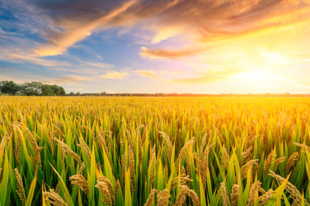
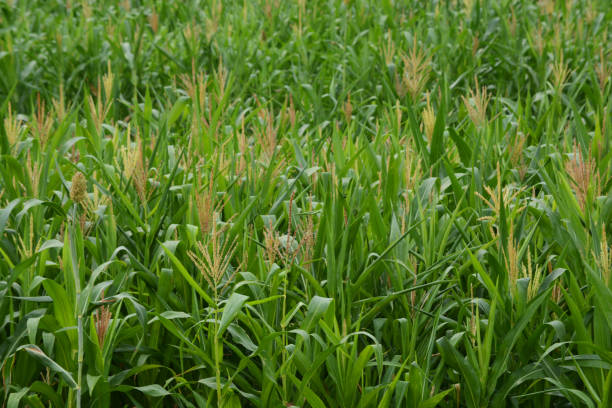
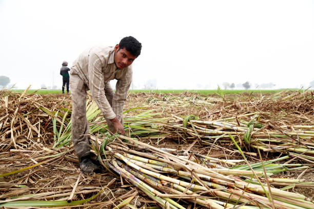
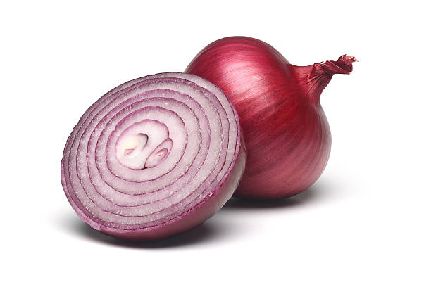
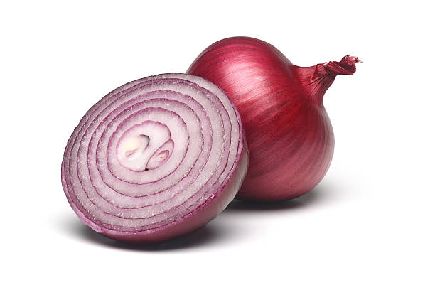
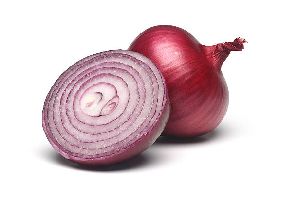

Growing Wheat involves several steps, from land preparation to harvest. Here's a detailed step-by-step guide:
1] Choose a Suitable Location: Select a wheat variety suitable for your climate and soil conditions. Consider disease resistance and yield potential.Treat seeds with fungicides or insecticides to protect them from soil-borne diseases and pests.Conduct a soil test to determine nutrient levels and pH. Wheat grows best in well-drained loamy soil with a pH of 6.0 to 7.5.
2] Sowing:
Sow wheat in the fall for winter wheat or in the spring for spring wheat. The optimal planting time varies by region. Ensure row spacing of 6-8 inches to promote healthy growth and adequate air circulation.
3] Watering:
Keep the soil moist but not waterlogged,especially during dry periods.
4] Disease Management:
Use a combination of biological, cultural, and chemical methods to control pests and diseases. Apply pesticides as needed, following recommended guidelines.
5] Nutrition:
Apply additional nitrogen fertilizer during the growing season to support vegetative growth and grain development. The timing and amount depend on the crop's needs and soil conditions.
6] Harvesting:
Harvest when the grain moisture content is around 14-16%. The wheat should be fully mature, with hard kernels and dry leaves.
By following these steps, you can successfully grow healthy wheat plants.
हिंदी
गेहूं उगाने में भूमि की तैयारी से लेकर कटाई तक कई चरण शामिल होते हैं। यहां एक विस्तृत चरण-दर-चरण मार्गदर्शिका दी गई है:
1] उपयुक्त स्थान चुनें: अपनी जलवायु और मिट्टी की स्थिति के लिए उपयुक्त गेहूं की किस्म का चयन करें। रोग प्रतिरोधक क्षमता और उपज क्षमता पर विचार करें। मिट्टी से पैदा होने वाली बीमारियों और कीटों से बचाने के लिए बीजों को फफूंदनाशकों या कीटनाशकों से उपचारित करें। पोषक तत्वों के स्तर और पीएच को निर्धारित करने के लिए मिट्टी का परीक्षण करें। गेहूं 6.0 से 7.5 पीएच वाली अच्छी जल निकास वाली दोमट मिट्टी में सबसे अच्छा उगता है।
2] बुवाई:
शीतकालीन गेहूं के लिए पतझड़ में या वसंत ऋतु में वसंत ऋतु में गेहूं बोएं। रोपण का इष्टतम समय क्षेत्र के अनुसार अलग-अलग होता है। स्वस्थ विकास और पर्याप्त वायु संचार को बढ़ावा देने के लिए पंक्तियों में 6-8 इंच की दूरी सुनिश्चित करें।
3] पानी देना:
मिट्टी को नम रखें लेकिन जलभराव न रखें, विशेषकर शुष्क अवधि के दौरान।
4] रोग प्रबंधन:
कीटों और बीमारियों को नियंत्रित करने के लिए जैविक, सांस्कृतिक और रासायनिक तरीकों के संयोजन का उपयोग करें। अनुशंसित दिशानिर्देशों का पालन करते हुए आवश्यकतानुसार कीटनाशकों का प्रयोग करें।
5] पोषण:
वनस्पति विकास और अनाज के विकास में सहायता के लिए बढ़ते मौसम के दौरान अतिरिक्त नाइट्रोजन उर्वरक लगाएं। समय और मात्रा फसल की ज़रूरतों और मिट्टी की स्थिति पर निर्भर करती है।
6] कटाई:
जब अनाज में नमी की मात्रा लगभग 14-16% हो तब कटाई करें। गेहूँ पूरी तरह परिपक्व होना चाहिए, जिसमें कठोर दाने और सूखी पत्तियाँ हों।
इन चरणों का पालन करके, आप सफलतापूर्वक स्वस्थ गेहूं के पौधे उगा सकते हैं।
వినండి
2. RICE / 2.चावल

ENGLISH
Rice involves several steps, from land preparation to harvest. Here's a detailed step-by-step guide:
1] Seedling Stage:
Select a rice variety suitable for your region's climate, soil type, and water availability. Consider factors like yield potential, maturity duration, and resistance to pests and diseases.Conduct a soil test to determine nutrient levels and pH. Rice grows best in slightly acidic to neutral soils with a pH of 5.5 to 7.0.
2] Planting:
Sow pre-germinated seeds directly into the prepared field. This method is less labor-intensive but may require more weed control.Grow seedlings in a nursery for about 20-30 days and then transplant them into the main field. This method often results in better crop establishment and yields.
3] Watering:
Maintain a shallow layer of water (2-5 cm) in the field until the plants are well-established.
4] Fertilization:
Apply a balanced fertilizer (e.g., 10-10-10) in early spring if needed, based on soil test results.
5] Harvesting Stage:
Harvest when the grains are mature, typically when 80-85% of the grains are golden yellow. The moisture content should be around 20-24%.
हिंदी
चावल में भूमि की तैयारी से लेकर कटाई तक कई चरण शामिल होते हैं। यहां एक विस्तृत चरण-दर-चरण मार्गदर्शिका दी गई है:
1] अंकुर अवस्था:
अपने क्षेत्र की जलवायु, मिट्टी के प्रकार और पानी की उपलब्धता के लिए उपयुक्त चावल की किस्म का चयन करें। उपज क्षमता, परिपक्वता अवधि और कीटों और बीमारियों के प्रतिरोध जैसे कारकों पर विचार करें। पोषक तत्वों के स्तर और पीएच को निर्धारित करने के लिए मिट्टी का परीक्षण करें। चावल 5.5 से 7.0 पीएच वाली थोड़ी अम्लीय से तटस्थ मिट्टी में सबसे अच्छा उगता है।
2] रोपण:
पहले से अंकुरित बीजों को सीधे तैयार खेत में बोयें। यह विधि कम श्रम-गहन है लेकिन अधिक खरपतवार नियंत्रण की आवश्यकता हो सकती है। लगभग 20-30 दिनों के लिए नर्सरी में अंकुर उगाएं और फिर उन्हें मुख्य खेत में रोपित करें। इस विधि के परिणामस्वरूप अक्सर बेहतर फसल स्थापना और पैदावार होती है।
3] पानी देना:
पौधों के अच्छी तरह स्थापित होने तक खेत में पानी की उथली परत (2-5 सेमी) बनाए रखें।
4] निषेचन:
यदि आवश्यक हो, तो मिट्टी परीक्षण के परिणामों के आधार पर शुरुआती वसंत में संतुलित उर्वरक (उदाहरण के लिए, 10-10-10) लागू करें।
5] कटाई चरण:
अनाज के परिपक्व होने पर कटाई करें, आमतौर पर जब 80-85% अनाज सुनहरे पीले रंग के हो जाएं। नमी की मात्रा लगभग 20-24% होनी चाहिए।
వినండి
3. MAIZE / 3.मक्का

ENGLISH
Growing Maize involves several key steps.
1] Planting:
Sow maize when the soil temperature is at least 50°F (10°C). The optimal planting time varies by region.Plant seeds at a depth of 1-2 inches, spacing them 8-10 inches apart within rows and 30-36 inches between rows. Use a planter for uniform seeding depth and spacing.
2] Water Management:
Maize requires adequate moisture throughout its growth stages, especially during germination, tasseling, and grain filling. Avoid waterlogging and drought stress.
3] Weed Control:
Use mechanical methods like hoeing or cultivation to manage weeds, especially in the early stages of growth.
4] Fertilization:
Apply additional nitrogen fertilizer during the growing season to support vegetative growth and grain development. The timing and amount depend on the crop's needs and soil conditions.
5] Pest Management:
Use a combination of biological, cultural, and chemical methods to control pests and diseases. Apply pesticides as needed, following recommended guidelines.
6] Harvesting:
Harvest when the kernels are fully mature and the moisture content is around 20-25%. This is typically when the husks are dry and brown, and the kernels are hard and dented.
By following these steps, you can effectively grow and harvest a healthy crop of maize.
हिंदी
मक्का उगाने में कई महत्वपूर्ण चरण शामिल हैं।
1] रोपण:
मक्के की बुआई तब करें जब मिट्टी का तापमान कम से कम 50°F (10°C) हो। इष्टतम रोपण का समय क्षेत्र के अनुसार अलग-अलग होता है। बीज को 1-2 इंच की गहराई पर रोपें, पंक्तियों के बीच 8-10 इंच और पंक्तियों के बीच 30-36 इंच का अंतर रखें। एक समान बीज बोने की गहराई और दूरी के लिए प्लांटर का उपयोग करें।
2] जल प्रबंधन:
मक्के को उसके विकास के पूरे चरण में, विशेषकर अंकुरण, छिलने और दाना भरने के दौरान पर्याप्त नमी की आवश्यकता होती है। जलभराव और सूखे के तनाव से बचें।
3] खरपतवार नियंत्रण:
खरपतवारों के प्रबंधन के लिए, विशेष रूप से विकास के प्रारंभिक चरण में, निराई-गुड़ाई या खेती जैसी यांत्रिक विधियों का उपयोग करें।
4] निषेचन:
वनस्पति विकास और अनाज के विकास में सहायता के लिए बढ़ते मौसम के दौरान अतिरिक्त नाइट्रोजन उर्वरक लगाएं। समय और मात्रा फसल की ज़रूरतों और मिट्टी की स्थिति पर निर्भर करती है।
5] कीट प्रबंधन:
कीटों और बीमारियों को नियंत्रित करने के लिए जैविक, सांस्कृतिक और रासायनिक तरीकों के संयोजन का उपयोग करें। अनुशंसित दिशानिर्देशों का पालन करते हुए आवश्यकतानुसार कीटनाशकों का प्रयोग करें।
6] कटाई:
जब दाने पूरी तरह पक जाएं और नमी की मात्रा लगभग 20-25% हो तब कटाई करें। यह आमतौर पर तब होता है जब भूसी सूखी और भूरे रंग की होती है, और दाने सख्त और दांतेदार होते हैं।
इन चरणों का पालन करके, आप प्रभावी ढंग से मक्के की स्वस्थ फसल उगा सकते हैं और काट सकते हैं।
వినండి
4. SOYABEAN / 4.सोया बीन
ENGLISH
Growing soyabean involves several key steps to ensure a healthy and productive crop. Here's a detailed step-by-step guide to growing soyabean:
1] Seed Germination:
Choose a well-drained, sunny field with soil pH between 6.0 and 7.5.Test soil for nutrient levels and pH; amend as needed.Plow to 15-20 cm depth, remove weeds and debris.
2] Vegetative Growth:
During this stage, the soyabean grows vegetatively, which means it focuses on developing its stems, leaves, and roots. The leaves of the plant absorb sunlight and convert it into energy through the process of photosynthesis, which is used to produce new cells and tissues.
3] Watering:
Ensure 50-75 cm of water during the growing season. Use drip, sprinkler, or furrow irrigation; avoid waterlogging.
4] Fertilization:
Apply phosphorus and potassium based on soil tests; nitrogen often not needed.Fertilize before planting or early growth stages.
5] Harvest:
Harvest when pods are dry, and seeds rattle; aim for 13-15% moisture content.Use a combine harvester, adjusting settings to minimize damage.
By following these steps, you can effectively grow and harvest a healthy crop of soyabean.
हिंदी
स्वस्थ और उत्पादक फसल सुनिश्चित करने के लिए सोयाबीन उगाने में कई महत्वपूर्ण कदम शामिल हैं। यहां सोयाबीन उगाने के लिए एक विस्तृत चरण-दर-चरण मार्गदर्शिका दी गई है:
1] बीज अंकुरण:
6.0 और 7.5 के बीच मिट्टी के पीएच के साथ एक अच्छी तरह से सूखा, धूप वाला खेत चुनें। पोषक तत्वों के स्तर और पीएच के लिए मिट्टी का परीक्षण करें; आवश्यकतानुसार संशोधन करें। 15-20 सेमी गहराई तक जुताई करें, खरपतवार और मलबा हटा दें।
2] वानस्पतिक विकास:
इस चरण के दौरान, सोयाबीन वानस्पतिक रूप से बढ़ता है, जिसका अर्थ है कि यह अपने तने, पत्तियों और जड़ों को विकसित करने पर ध्यान केंद्रित करता है। पौधे की पत्तियाँ सूर्य के प्रकाश को अवशोषित करती हैं और प्रकाश संश्लेषण की प्रक्रिया के माध्यम से इसे ऊर्जा में परिवर्तित करती हैं, जिसका उपयोग नई कोशिकाओं और ऊतकों के निर्माण के लिए किया जाता है।
3] पानी देना:
बढ़ते मौसम के दौरान 50-75 सेमी पानी सुनिश्चित करें। ड्रिप, स्प्रिंकलर या फ़रो सिंचाई का उपयोग करें; जलभराव से बचें।
4] निषेचन:
मिट्टी परीक्षण के आधार पर फास्फोरस और पोटेशियम का प्रयोग करें; अक्सर नाइट्रोजन की आवश्यकता नहीं होती है। रोपण से पहले या शुरुआती विकास चरणों में खाद डालें।
5] फसल:
जब फलियाँ सूख जाएँ और बीज चटकने लगें तब कटाई करें; 13-15% नमी की मात्रा का लक्ष्य रखें। नुकसान को कम करने के लिए सेटिंग्स को समायोजित करते हुए कंबाइन हार्वेस्टर का उपयोग करें।
इन चरणों का पालन करके, आप सोयाबीन की स्वस्थ फसल को प्रभावी ढंग से उगा सकते हैं और काट सकते हैं।
వినండి
5. SUGARCANE / 5.गन्ना

ENGLISH
Growing sugarcane involves several steps from land preparation to harvesting. Here is a detailed step-by-step guide for growing sugarcane:
1] Soil preparation:
Sugarcane grows best in well-drained soil with a pH of 6.0-7.5. The soil should be tilled to a depth of 6-8 inches and any weeds or rocks removed.
2] Planting:
Plant seeds 1-2 inches deep, spacing them 6-12 inches apart in rows that are 24-36 inches apart. The seeding rate is typically 4-5 pounds per acre.
3] Germination:
The seed will germinate within 7-10 days, provided the soil is moist and the temperature is warm enough. The seed will send out a small root and a shoot, which will eventually grow into the sugarcane.
4] Nutrient Management:
Apply nitrogen, phosphorus, and potassium based on soil test recommendations.Use organic matter or compost to improve soil fertility.
5] Monitoring:
Ensure the plants receive adequate water and nutrients throughout these stages. Protect from pests and diseases.
6] Harvesting:
Harvest sugarcane 12-18 months after planting, depending on the variety and growing conditions.Look for mature canes with a high sugar content.
हिंदी
गन्ना उगाने में भूमि की तैयारी से लेकर कटाई तक कई चरण शामिल होते हैं। यहां गन्ना उगाने के लिए एक विस्तृत चरण-दर-चरण मार्गदर्शिका दी गई है:
1] मिट्टी की तैयारी:
गन्ना 6.0-7.5 pH वाली अच्छी जल निकास वाली मिट्टी में सबसे अच्छा उगता है। मिट्टी को 6-8 इंच की गहराई तक जोता जाना चाहिए और किसी भी खरपतवार या चट्टान को हटा देना चाहिए।
2] रोपण:
बीज 1-2 इंच गहराई में रोपें, उन्हें 24-36 इंच की पंक्तियों में 6-12 इंच की दूरी पर रखें। बीज बोने की दर आम तौर पर 4-5 पाउंड प्रति एकड़ होती है।
3] अंकुरण:
बीज 7-10 दिनों के भीतर अंकुरित हो जाएगा, बशर्ते मिट्टी नम हो और तापमान पर्याप्त गर्म हो। बीज से एक छोटी जड़ और एक अंकुर निकलेगा, जो अंततः गन्ने में विकसित होगा।
4] पोषक तत्व प्रबंधन:
मिट्टी परीक्षण की सिफारिशों के आधार पर नाइट्रोजन, फास्फोरस और पोटेशियम का प्रयोग करें। मिट्टी की उर्वरता में सुधार के लिए कार्बनिक पदार्थ या खाद का उपयोग करें।
5] निगरानी:
सुनिश्चित करें कि इन चरणों के दौरान पौधों को पर्याप्त पानी और पोषक तत्व प्राप्त हों। कीटों और बीमारियों से बचाएं।
6] कटाई:
किस्म और बढ़ती परिस्थितियों के आधार पर, रोपण के 12-18 महीने बाद गन्ने की कटाई करें। उच्च चीनी सामग्री वाले परिपक्व गन्ने की तलाश करें।
వినండి
6. COTTON / 6.कपास
ENGLISH
Growing Cotton involves several steps to ensure a healthy and productive crop. Here is a detailed step-by-step guide to growing cotton:
1] Seedling Stage:
Choose high-quality, disease-resistant cotton varieties suitable for your climate.Opt for seeds with good germination rates.
2] Planting:
Plant cotton when the soil temperature is consistently above 15°C (59°F).
Typically, planting occurs in late spring.
3] Watering:
Cotton requires 500-700 mm of water throughout its growing season.Ensure consistent moisture, especially during flowering and boll formation
4] Disease Management:
Monitor for pests like bollworms, aphids, and whiteflies.Use appropriate insecticides and integrated pest management (IPM) practices.Practice crop rotation and use resistant varieties to minimize disease risk.
5] Harvesting:
Cotton is ready for harvest when the bolls open and the lint is fully exposed.This typically occurs 150-180 days after planting, depending on the variety and growing conditions.
हिंदी
स्वस्थ और उत्पादक फसल सुनिश्चित करने के लिए कपास उगाने में कई चरण शामिल होते हैं। यहां कपास उगाने के लिए एक विस्तृत चरण-दर-चरण मार्गदर्शिका दी गई है:
1] अंकुर चरण:
अपनी जलवायु के लिए उपयुक्त उच्च गुणवत्ता वाली, रोग-प्रतिरोधी कपास की किस्में चुनें। अच्छी अंकुरण दर वाले बीज चुनें।
2] रोपण:
जब मिट्टी का तापमान लगातार 15°C (59°F) से ऊपर हो तो कपास की बुआई करें।
आमतौर पर, रोपण वसंत के अंत में होता है।
3] पानी देना:
कपास को पूरे बढ़ते मौसम में 500-700 मिमी पानी की आवश्यकता होती है। लगातार नमी सुनिश्चित करें, विशेष रूप से फूल आने और बीजकोष बनने के दौरान।
4] रोग प्रबंधन:
बॉलवर्म, एफिड्स और व्हाइटफ्लाइज़ जैसे कीटों की निगरानी करें। उचित कीटनाशकों और एकीकृत कीट प्रबंधन (आईपीएम) प्रथाओं का उपयोग करें। रोग के जोखिम को कम करने के लिए फसल चक्र अपनाएं और प्रतिरोधी किस्मों का उपयोग करें।
5] कटाई:
कपास फसल के लिए तब तैयार होती है जब बीजकोष खुल जाते हैं और लिंट पूरी तरह से खुल जाता है। यह आमतौर पर रोपण के 150-180 दिन बाद होता है, जो कि विविधता और बढ़ती परिस्थितियों पर निर्भर करता है।
వినండి
7. PULSES / 7.दालें
ENGLISH
Here's a step-by-step guide to growing Pulses:
1] Seed Selection:
Choose high-quality seeds from a reputable source. Look for seeds that are free from any signs of damage or disease.
2] Sowing seeds:
Pulses seeds can be sown directly into the soil. Plant the seeds about 1/4 to 1/2 inch deep and space them 2-3 inches apart in rows that are 12-18 inches apart.
3] Watering:
Keep the soil evenly moist but not waterlogged after sowing. as plants require regular watering.
4] Fertilization:
Apply fertilizers based on soil test recommendations. pulses typically requires nitrogen (N), phosphorus (P), and potassium (K). Apply a balanced fertilizer at planting and additional nitrogen as needed during the growing season.
5] Manual Weeding:
Hand weed or use mechanical weeders to control weeds, especially during the early growth stages.
6] Harvesting:
Harvest when the pods are fully developed and dry. For chickpeas, pods turn brown and seeds are hard. For lentils, pods become tan or brown.
Pulse cultivation involves careful site selection, proper land preparation, selection and treatment of seeds, timely sowing, consistent irrigation, balanced nutrient management, regular weeding, effective pest and disease management, and timely harvesting and post-harvest handling. Following these steps ensures healthy growth and high yields of quality pulses.
हिंदी
यहां दालें उगाने के लिए चरण-दर-चरण मार्गदर्शिका दी गई है:
1] बीज चयन:
किसी प्रतिष्ठित स्रोत से उच्च गुणवत्ता वाले बीज चुनें। ऐसे बीजों की तलाश करें जिनमें क्षति या बीमारी का कोई लक्षण न हो।
2] बीज बोना:
दलहन के बीज सीधे मिट्टी में बोए जा सकते हैं। बीज लगभग 1/4 से 1/2 इंच गहराई में रोपें और उन्हें 12-18 इंच की पंक्तियों में 2-3 इंच की दूरी पर रखें।
3] पानी देना:
बुआई के बाद मिट्टी को समान रूप से नम रखें लेकिन जलभराव न रखें। क्योंकि पौधों को नियमित रूप से पानी देने की आवश्यकता होती है।
4] निषेचन:
मृदा परीक्षण अनुशंसाओं के आधार पर उर्वरकों का प्रयोग करें। दालों के लिए आमतौर पर नाइट्रोजन (एन), फॉस्फोरस (पी), और पोटेशियम (के) की आवश्यकता होती है। रोपण के समय संतुलित उर्वरक और बढ़ते मौसम के दौरान आवश्यकतानुसार अतिरिक्त नाइट्रोजन डालें।
5] मैन्युअल निराई:
खरपतवारों को नियंत्रित करने के लिए हाथ से निराई करें या यांत्रिक खरपतवारों का उपयोग करें, विशेष रूप से शुरुआती विकास चरणों के दौरान।
6] कटाई:
जब फलियाँ पूरी तरह विकसित और सूख जाएँ तो कटाई करें। चने की फलियाँ भूरे रंग की हो जाती हैं और बीज सख्त हो जाते हैं। दाल के लिए, फलियाँ भूरे या भूरे रंग की हो जाती हैं।
दलहन की खेती में सावधानीपूर्वक स्थल चयन, उचित भूमि की तैयारी, बीजों का चयन और उपचार, समय पर बुआई, लगातार सिंचाई, संतुलित पोषक तत्व प्रबंधन, नियमित निराई, प्रभावी कीट और रोग प्रबंधन और समय पर कटाई और कटाई के बाद की देखभाल शामिल है। इन चरणों का पालन करने से स्वस्थ विकास और गुणवत्तापूर्ण दालों की उच्च पैदावार सुनिश्चित होती है।
వినండి
8. GROUNDNUT / 8.मूंगफली
ENGLISH
Here's a step-by-step guide to growing Groundnut:
1] Seed Selection:
Choose high-quality seeds from a reputable source. Look for seeds that are free from any signs of damage or disease.
2] Sowing seeds:
groundnut seeds can be sown directly into the soil. Plant the seeds about 1/4 to 1/2 inch deep and space them 2-3 inches apart in rows that are 12-18 inches apart.
3] Watering:
Keep the soil evenly moist but not waterlogged after sowing. as plants require regular watering.
4] Fertilization:
Apply fertilizers based on soil test recommendations. pulses typically requires nitrogen (N), phosphorus (P), and potassium (K). Apply a balanced fertilizer at planting and additional nitrogen as needed during the growing season.
5] Manual Weeding:
Hand weed or use mechanical weeders to control weeds, especially during the early growth stages.
6] Harvesting:
Groundnuts are ready for harvest when the leaves turn yellow and the pods are mature.This typically occurs 120-150 days after planting, depending on the variety and growing conditions.
हिंदी
यहां मूंगफली उगाने के लिए चरण-दर-चरण मार्गदर्शिका दी गई है:
1] बीज चयन:
किसी प्रतिष्ठित स्रोत से उच्च गुणवत्ता वाले बीज चुनें। ऐसे बीजों की तलाश करें जिनमें क्षति या बीमारी का कोई लक्षण न हो।
2] बीज बोना:
मूंगफली के बीज सीधे मिट्टी में बोए जा सकते हैं। बीज लगभग 1/4 से 1/2 इंच गहराई में रोपें और उन्हें 12-18 इंच की पंक्तियों में 2-3 इंच की दूरी पर रखें।
3] पानी देना:
बुआई के बाद मिट्टी को समान रूप से नम रखें लेकिन जल भराव न रखें। क्योंकि पौधों को नियमित रूप से पानी देने की आवश्यकता होती है।
4] निषेचन:
मृदा परीक्षण की सिफारिशों के आधार पर उर्वरकों का प्रयोग करें। दालों के लिए आमतौर पर नाइट्रोजन (एन), फॉस्फोरस (पी), और पोटेशियम (के) की आवश्यकता होती है। रोपण के समय संतुलित उर्वरक और बढ़ते मौसम के दौरान आवश्यकतानुसार अतिरिक्त नाइट्रोजन डालें।
5] मैन्युअल निराई:
खरपतवारों को नियंत्रित करने के लिए हाथ से निराई करें या यांत्रिक निराई का उपयोग करें, विशेष रूप से शुरुआती विकास चरणों के दौरान।
6] कटाई:
जब पत्तियाँ पीली हो जाती हैं और फलियाँ परिपक्व हो जाती हैं तो मूंगफली कटाई के लिए तैयार हो जाती है। यह आमतौर पर रोपण के 120-150 दिन बाद होता है, जो कि विविधता और बढ़ती परिस्थितियों पर निर्भर करता है।
వినండి
9. ONION / 9.प्याज

ENGLISH
Here's a step-by-step guide to growing Onion:
1] Seed Selection:
Choose high-quality seeds from a reputable source. Look for seeds that are free from any signs of damage or disease.
2] Sowing seeds:
Choose high-quality, disease-resistant onion varieties suitable for your climate.Use seeds, sets (small bulbs), or transplants depending on the preferred method.
3] Watering:
Onions need consistent moisture, especially during bulb formation.Provide about 2.5 cm (1 inch) of water per week through rainfall or irrigation.
4] Fertilization:
Apply fertilizers based on soil test recommendations. pulses typically requires nitrogen (N), phosphorus (P), and potassium (K). Apply a balanced fertilizer at planting and additional nitrogen as needed during the growing season.
5] Manual Weeding:
Hand weed or use mechanical weeders to control weeds, especially during the early growth stages.
6] Harvesting:
Onions are ready for harvest when the tops begin to yellow and fall over.This typically occurs 90-120 days after planting, depending on the variety and growing conditions.
हिंदी
यहां प्याज उगाने के लिए चरण-दर-चरण मार्गदर्शिका दी गई है:
1] बीज चयन:
किसी प्रतिष्ठित स्रोत से उच्च गुणवत्ता वाले बीज चुनें। ऐसे बीजों की तलाश करें जिनमें क्षति या बीमारी का कोई लक्षण न हो।
2] बीज बोना:
अपनी जलवायु के लिए उपयुक्त उच्च गुणवत्ता वाली, रोग-प्रतिरोधी प्याज की किस्में चुनें। पसंदीदा विधि के आधार पर बीज, सेट (छोटे बल्ब), या प्रत्यारोपण का उपयोग करें।
3] पानी देना:
प्याज को लगातार नमी की आवश्यकता होती है, खासकर बल्ब बनने के दौरान। वर्षा या सिंचाई के माध्यम से प्रति सप्ताह लगभग 2.5 सेमी (1 इंच) पानी प्रदान करें।
4] निषेचन:
मृदा परीक्षण की सिफारिशों के आधार पर उर्वरकों का प्रयोग करें। दालों के लिए आमतौर पर नाइट्रोजन (एन), फॉस्फोरस (पी), और पोटेशियम (के) की आवश्यकता होती है। रोपण के समय संतुलित उर्वरक और बढ़ते मौसम के दौरान आवश्यकतानुसार अतिरिक्त नाइट्रोजन डालें।
5] मैन्युअल निराई:
खरपतवारों को नियंत्रित करने के लिए हाथ से निराई करें या यांत्रिक निराई का उपयोग करें, विशेष रूप से शुरुआती विकास चरणों के दौरान।
6] कटाई:
जब प्याज की ऊपरी सतह पीली पड़ने लगती है और गिरने लगती है तो प्याज कटाई के लिए तैयार हो जाता है। यह आमतौर पर रोपण के 90-120 दिन बाद होता है, जो कि किस्म और बढ़ती परिस्थितियों पर निर्भर करता है।
వినండి
10. BANANA / 10.केला
ENGLISH
Here's a step-by-step guide to growing Banana:
1] Seed Selection:
Choose healthy, disease-free suckers or tissue-cultured plantlets from high-yielding banana varieties.
2] Sowing seeds:
Dig holes 60 cm wide and 60 cm deep.Space the holes 2-3 meters apart in rows that are 3-4 meters apart.
3] Watering:
Bananas need consistent moisture but cannot tolerate waterlogging.Ensure regular watering, especially during dry periods.Use drip irrigation or furrow irrigation for efficient water use.Maintain soil moisture without causing waterlogging.
4] Fertilization:
Apply fertilizers based on soil test recommendations. pulses typically requires nitrogen (N), phosphorus (P), and potassium (K). Apply a balanced fertilizer at planting and additional nitrogen as needed during the growing season.
5] Weed control:
Keep the plantation weed-free, especially during the early stages of growth.Use manual weeding or appropriate herbicides as needed.
6] Harvesting:
Bananas are ready for harvest 9-12 months after planting.Harvest when the fruit is full-sized and the edges of the fingers have rounded.
Cut the entire bunch when the top hands are mature.Handle the bunches carefully to avoid bruising.
हिंदी
यहां केले उगाने के लिए चरण-दर-चरण मार्गदर्शिका दी गई है:
1] <यू>बीज चयन:
अधिक उपज देने वाली केले की किस्मों से स्वस्थ, रोग-मुक्त सकर्स या ऊतक-संवर्धित पौधे चुनें।
2] बीज बोना:
60 सेमी चौड़ा और 60 सेमी गहरा गड्ढा खोदें। छेदों को 3-4 मीटर की पंक्तियों में 2-3 मीटर की दूरी पर रखें।
3] <यू>पानी देना:
केले को लगातार नमी की आवश्यकता होती है, लेकिन जलभराव बर्दाश्त नहीं कर सकते। नियमित रूप से पानी देना सुनिश्चित करें, विशेष रूप से शुष्क अवधि के दौरान। पानी के कुशल उपयोग के लिए ड्रिप सिंचाई या फ़रो सिंचाई का उपयोग करें। जलभराव पैदा किए बिना मिट्टी की नमी बनाए रखें।
4] <यू>निषेचन:
मृदा परीक्षण अनुशंसाओं के आधार पर उर्वरकों का प्रयोग करें। दालों के लिए आमतौर पर नाइट्रोजन (एन), फास्फोरस (पी), और पोटेशियम (के) की आवश्यकता होती है। रोपण के समय संतुलित उर्वरक और बढ़ते मौसम के दौरान आवश्यकतानुसार अतिरिक्त नाइट्रोजन डालें।
5] <यू>खरपतवार नियंत्रण:
वृक्षारोपण को खरपतवार-मुक्त रखें, विशेष रूप से विकास के शुरुआती चरणों के दौरान। आवश्यकतानुसार मैन्युअल निराई या उपयुक्त शाकनाशी का उपयोग करें।
6] <यू>कटाई:
केले रोपण के 9-12 महीने बाद कटाई के लिए तैयार हो जाते हैं। जब फल पूरे आकार का हो जाए और उंगलियों के किनारे गोल हो जाएं तो कटाई करें।
जब ऊपरी हाथ परिपक्व हो जाएं तो पूरे गुच्छों को काट लें। चोट लगने से बचने के लिए गुच्छों को सावधानी से संभालें।


 
